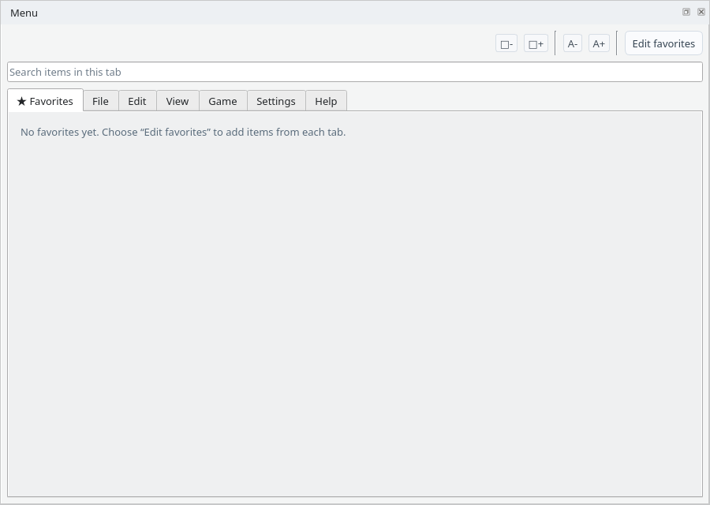
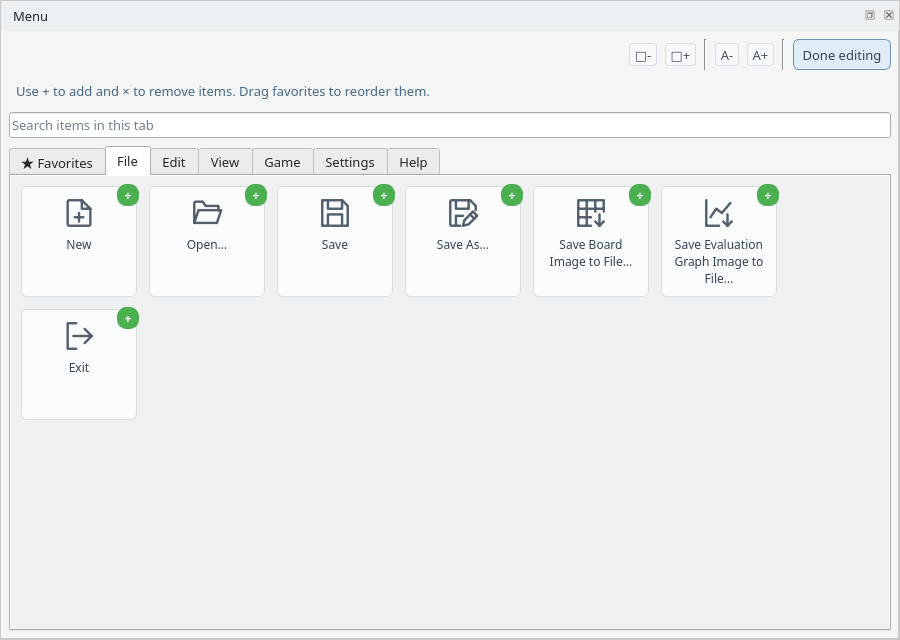
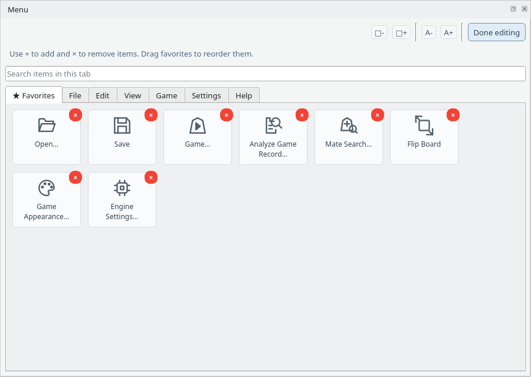
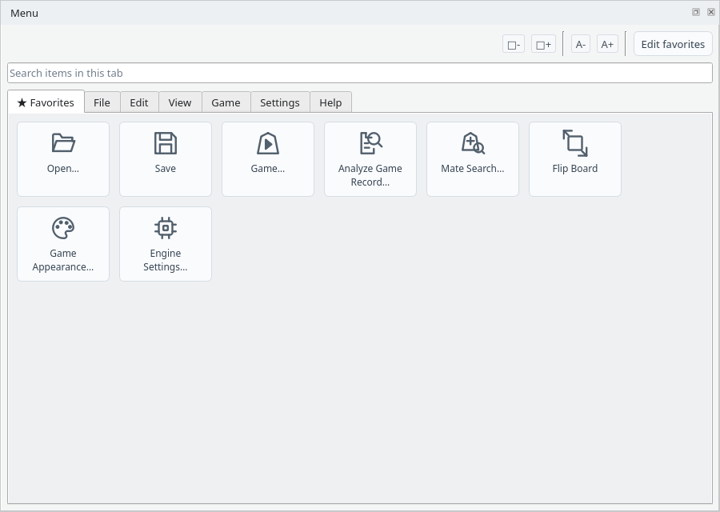

Access commands quickly from the menu dock
Screenshots were captured on Linux with the English interface.
Collect frequently used commands in Favorites for quick access
The ★ Favorites tab shows the items you have added. At first nothing is added, so only a hint is shown.

Favorites tab with nothing added
Click Edit favorites at the top right to start editing; the button changes to Done editing. A green + appears at the top right of each item in every tab. Click it to add the item to Favorites.

Editing favorites: add items with +
While editing, the Favorites tab shows a red × at the top right of each added item. Click it to remove the item from Favorites. Drag items to reorder them. Click Done editing when you are finished.

Editing favorites: remove with × and drag to reorder
Added items are collected in the ★ Favorites tab, so you can use frequent commands without switching tabs.

Added items appear in the Favorites tab